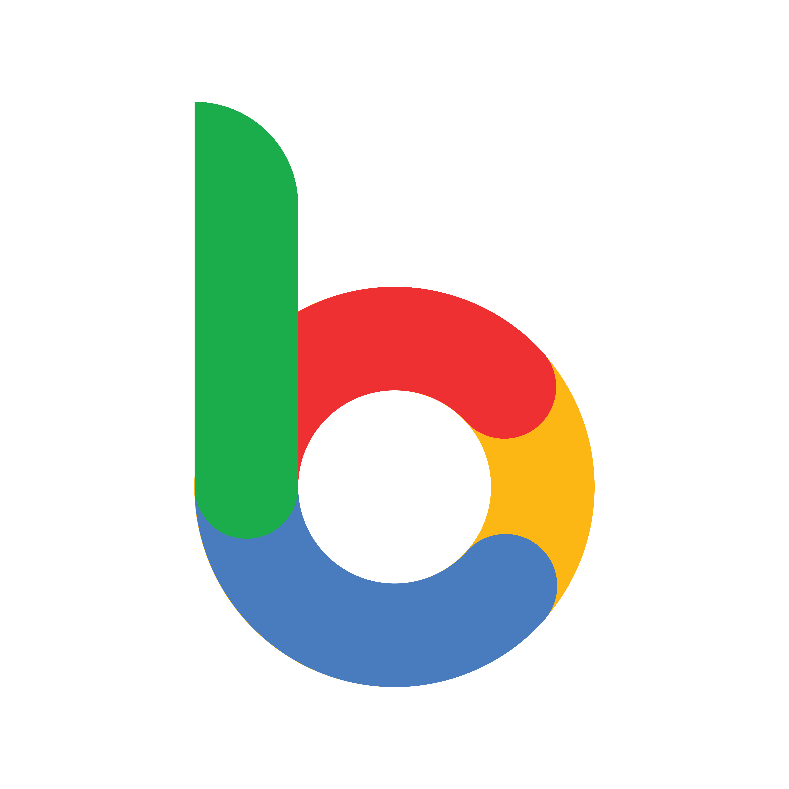

BiTGApps
Hi All,
Welcome to the official BiTGApps homepage!
A custom GApps package which contain minimal, But has all the required Google Applications to get Google Services functionality.
Introduction
An open-source project started with the goal of having a google apps package with minimal install. Minimal, but still provide proper Google Services functionality. BiTGApps build does not comes in several variants like other google apps packages. It comes in one variant only, The Minimal. BiTGApps is neither a fork nor based on any other existing GApps project. It’s a completely different project started from zero. The BiTGApps Project came into existence in May 2018.
Features
* Minimal Build Size
* OTA survival functionality
* Google Dialer Framework Support
* Google Maps Framework Support
General Information
The main purpose of this project is providing a custom GApps package which is minimal, comes with unique features and has no bloats at all. Simplicity, but straight to the point is what BiTGApps all about. The very minimal build size and additional features makes it different from other GApps projects. This post does not cover complete information regarding this project. It is recommended to read BiTGApps Documentation for Downloads and Detailed information. Please read the FAQ before installation.
Support Project
This project is maintained alone by me and putting in a lot of hours into it, to make it better. If you find my work good and it make things better for you, While not mandatory, donations encourage me to continue to further pursue this project and helps bear expense of resources used by this project.